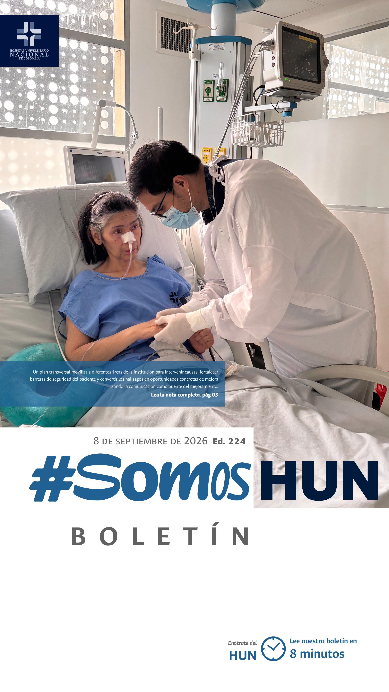
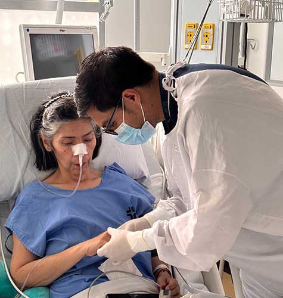
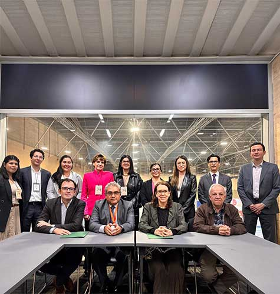
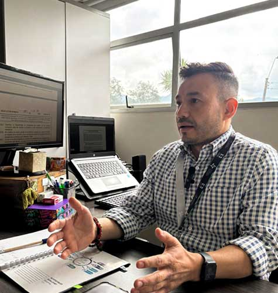
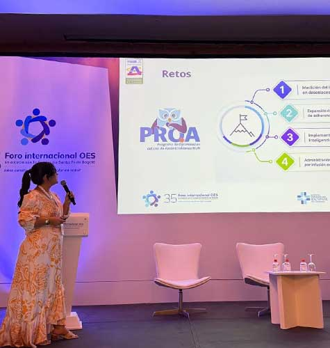
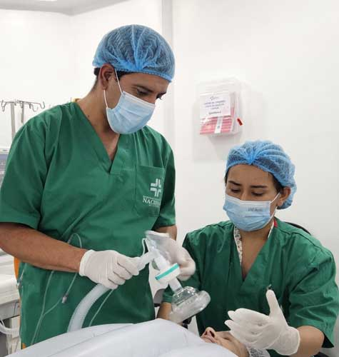
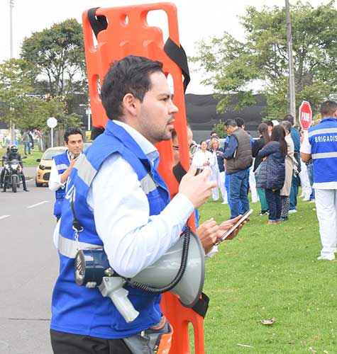
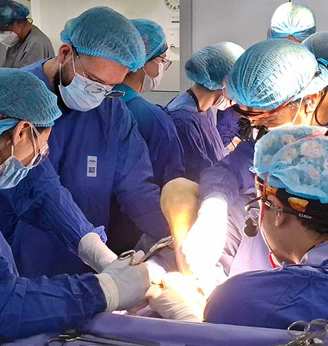

Ver todos los boletines
Plan de Acción de Seguridad del Paciente
En el Hospital Universitario Nacional de Colombia entendemos que la seguridad del paciente se construye todos los días, identificando oportunamente los riesgos, aprendiendo de las situaciones que pueden generar daño y actuando sobre las causas que las originan.Leer más

Hospital Universitario Nacional de Colombia e Instituto Nacional de Cancerología unen capacidades para fortalecer la atención oncológica basada en evidencia
El Hospital Universitario Nacional de Colombia (HUN), a través de la Corporación Salud UN, y el Instituto Nacional de Cancerología (INC) firmaron un convenio de cooperación interinstitucional que permitirá implementar estándares clínicos basados en la evidencia(ECBE), fortalecer la investigación colaborativa y promover modelos de atención más eficientes para los pacientes con cáncer en el país.
Avanzamos en Transparencia y Ética: una responsabilidad de todos
El Programa de Transparencia y Ética Empresarial fortalece nuestra cultura de integridad y establece herramientas para prevenir, detectar y gestionar riesgos de corrupción, opacidad, fraude y soborno en el HUN.Leer más

El HUN comparte conocimiento e innovación en el 35.o Foro Internacional OES
Investigación, transformación digital y gestión clínica fueron protagonistas de la participación del Hospital Universitario Nacional de Colombia en uno de los principales escenarios de intercambio sobre calidad y excelencia en salud del país.Leer más

Anestesiología al frente de las nuevas prácticas clínicas y del impacto de la tecnología en la atención en salud
La Universidad Nacional de Colombia y el Hospital Universitario Nacional de Colombia(HUN) se unen para impulsar un espacio de actualización, formación e intercambio de experiencias que contribuya a fortalecer la práctica de los profesionales y futuros especialistas.Leer más

Súmate a nuestra Brigada HUN
Los recientes movimientos sísmicos que hemos vivido en Colombia nos recuerdan que una emergencia puede presentarse en cualquier momento y que estar preparados puede marcar una gran diferencia.Leer más

HUN alerta sobre los riesgos: Cirugía plástica segura
La evolución de las quejas y denuncias registradas en Bogotá entre 2015 y 2026 refleja un cambio sustancial en la naturaleza del riesgo asociado a los procedimientos estéticos.Leer más